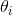
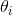
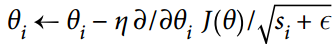
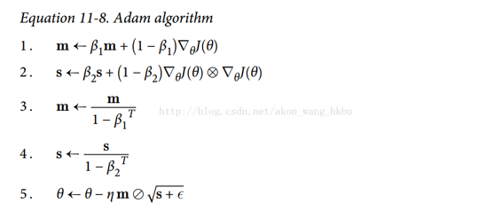
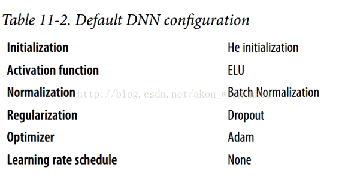

十一、训练深层神经网络
校对者：@飞龙、@ZeyuZhong
第 10 章介绍了人工神经网络，并训练了我们的第一个深度神经网络。 但它是一个非常浅的 DNN，只有两个隐藏层。 如果你需要解决非常复杂的问题，例如检测高分辨率图像中的数百种类型的对象，该怎么办？ 你可能需要训练更深的 DNN，也许有 10 层，每层包含数百个神经元，通过数十万个连接来连接。 这不会是闲庭信步：
- 首先，你将面临棘手的梯度消失问题（或相关的梯度爆炸问题），这会影响深度神经网络，并使较低层难以训练。
- 其次，对于如此庞大的网络，训练将非常缓慢。
- 第三，具有数百万参数的模型将会有严重的过拟合训练集的风险。
在本章中，我们将依次讨论这些问题，并提出解决问题的技巧。 我们将从解释梯度消失问题开始，并探讨解决这个问题的一些最流行的解决方案。 接下来我们将看看各种优化器，与普通梯度下降相比，它们可以加速大型模型的训练。 最后，我们将浏览一些流行的大型神经网络正则化技术。
使用这些工具，你将能够训练非常深的网络：欢迎来到深度学习的世界！
梯度消失/爆炸问题
正如我们在第 10 章中所讨论的那样，反向传播算法的工作原理是从输出层到输入层，传播误差的梯度。 一旦该算法已经计算了网络中每个参数的损失函数的梯度，它就使用这些梯度来用梯度下降步骤来更新每个参数。
不幸的是，梯度往往变得越来越小，随着算法进展到较低层。 结果，梯度下降更新使得低层连接权重实际上保持不变，并且训练永远不会收敛到良好的解决方案。 这被称为梯度消失问题。 在某些情况下，可能会发生相反的情况：梯度可能变得越来越大，许多层得到了非常大的权重更新，算法发散。这是梯度爆炸的问题，在循环神经网络中最为常见（见第 14 章）。 更一般地说，深度神经网络受梯度不稳定之苦; 不同的层次可能以非常不同的速度学习。
虽然这种不幸的行为已经经过了相当长的一段时间的实验观察（这是造成深度神经网络大部分时间都被抛弃的原因之一），但直到 2010 年左右，人们才有了明显的进步。 Xavier Glorot 和 Yoshua Bengio 发表的题为《Understanding the Difficulty of Training Deep Feedforward Neural Networks》的论文发现了一些疑问，包括流行的 sigmoid 激活函数和当时最受欢迎的权重初始化技术的组合，即随机初始化时使用平均值为 0，标准差为 1 的正态分布。简而言之，他们表明，用这个激活函数和这个初始化方案，每层输出的方差远大于其输入的方差。网络正向，每层的方差持续增加，直到激活函数在顶层饱和。这实际上是因为logistic函数的平均值为 0.5 而不是 0（双曲正切函数的平均值为 0，表现略好于深层网络中的logistic函数）
看一下logistic 激活函数（参见图 11-1），可以看到当输入变大（负或正）时，函数饱和在 0 或 1，导数非常接近 0。因此，当反向传播开始时， 它几乎没有梯度通过网络传播回来，而且由于反向传播通过顶层向下传递，所以存在的小梯度不断地被稀释，因此较低层确实没有任何东西可用。
Glorot 和 Bengio 在他们的论文中提出了一种显著缓解这个问题的方法。 我们需要信号在两个方向上正确地流动：在进行预测时是正向的，在反向传播梯度时是反向的。 我们不希望信号消失，也不希望它爆炸并饱和。 为了使信号正确流动，作者认为，我们需要每层输出的方差等于其输入的方差。（这里有一个比喻：如果将麦克风放大器的旋钮设置得太接近于零，人们听不到声音，但是如果将麦克风放大器设置得太大，声音就会饱和，人们就会听不懂你在说什么。 现在想象一下这样一个放大器的链条：它们都需要正确设置，以便在链条的末端响亮而清晰地发出声音。 你的声音必须以每个放大器的振幅相同的幅度出来。）而且我们也需要梯度在相反方向上流过一层之前和之后有相同的方差（如果您对数学细节感兴趣，请查阅论文）。实际上不可能保证两者都是一样的，除非这个层具有相同数量的输入和输出连接，但是他们提出了一个很好的折衷办法，在实践中证明这个折中办法非常好：随机初始化连接权重必须如公式 11-1 所描述的那样。其中n_inputs和n_outputs是权重正在被初始化的层（也称为扇入和扇出）的输入和输出连接的数量。 这种初始化策略通常被称为Xavier初始化（在作者的名字之后），或者有时是 Glorot 初始化。
当输入连接的数量大致等于输出连接的数量时，可以得到更简单的等式  我们在第 10 章中使用了这个简化的策略。
我们在第 10 章中使用了这个简化的策略。
使用 Xavier 初始化策略可以大大加快训练速度，这是导致深度学习目前取得成功的技巧之一。 最近的一些论文针对不同的激活函数提供了类似的策略，如表 11-1 所示。 ReLU 激活函数（及其变体，包括简称 ELU 激活）的初始化策略有时称为 He 初始化（在其作者的姓氏之后）。

默认情况下，fully_connected()函数（在第 10 章中介绍）使用 Xavier 初始化（具有统一的分布）。 你可以通过使用如下所示的variance_scaling_initializer()函数来将其更改为 He 初始化：
注意：本书使用tensorflow.contrib.layers.fully_connected()而不是tf.layers.dense()（本章编写时不存在）。 现在最好使用tf.layers.dense()，因为contrib模块中的任何内容可能会更改或删除，恕不另行通知。 dense()函数几乎与fully_connected()函数完全相同。 与本章有关的主要差异是：
几个参数被重新命名：范围变成名字，activation_fn变成激活（类似地，_fn后缀从诸如normalizer_fn之类的其他参数中移除），weights_initializer变成kernel_initializer等等。默认激活现在是None，而不是tf.nn.relu。 它不支持tensorflow.contrib.framework.arg_scope()（稍后在第 11 章中介绍）。 它不支持正则化的参数（稍后在第 11 章介绍）。
he_init = tf.contrib.layers.variance_scaling_initializer()
hidden1 = tf.layers.dense(X, n_hidden1, activation=tf.nn.relu,
kernel_initializer=he_init, name="hidden1")
He 初始化只考虑了扇入，而不是像 Xavier 初始化那样扇入和扇出之间的平均值。 这也是variance_scaling_initializer()函数的默认值，但您可以通过设置参数mode ="FAN_AVG"来更改它。
非饱和激活函数
Glorot 和 Bengio 在 2010 年的论文中的一个见解是，消失/爆炸的梯度问题部分是由于激活函数的选择不好造成的。 在那之前，大多数人都认为，如果大自然选择在生物神经元中使用 sigmoid 激活函数，它们必定是一个很好的选择。 但事实证明，其他激活函数在深度神经网络中表现得更好，特别是 ReLU 激活函数，主要是因为它对正值不会饱和（也因为它的计算速度很快）。
不幸的是，ReLU激活功能并不完美。 它有一个被称为 “ReLU 死区” 的问题：在训练过程中，一些神经元有效地死亡，意味着它们停止输出 0 以外的任何东西。在某些情况下，你可能会发现你网络的一半神经元已经死亡，特别是如果你使用大学习率。 在训练期间，如果神经元的权重得到更新，使得神经元输入的加权和为负，则它将开始输出 0 。当这种情况发生时，由于当输入为负时，ReLU函数的梯度为0，神经元不可能恢复生机。
为了解决这个问题，你可能需要使用 ReLU 函数的一个变体，比如 leaky ReLU。这个函数定义为LeakyReLUα(z)= max(αz，z)（见图 11-2）。超参数α定义了函数“leaks”的程度：它是z < 0时函数的斜率，通常设置为 0.01。这个小斜坡确保 leaky ReLU 永不死亡；他们可能会长期昏迷，但他们有机会最终醒来。最近的一篇论文比较了几种 ReLU 激活功能的变体，其中一个结论是 leaky Relu 总是优于严格的 ReLU 激活函数。事实上，设定α= 0.2（巨大 leak）似乎导致比α= 0.01（小 leak）更好的性能。他们还评估了随机化 leaky ReLU（RReLU），其中α在训练期间在给定范围内随机挑选，并在测试期间固定为平均值。它表现相当好，似乎是一个正则项（减少训练集的过拟合风险）。最后，他们还评估了参数 leaky ReLU（PReLU），其中α被授权在训练期间被学习（而不是超参数，它变成可以像任何其他参数一样被反向传播修改的参数）。据报道这在大型图像数据集上的表现强于 ReLU，但是对于较小的数据集，其具有过度拟合训练集的风险。
最后，Djork-Arné Clevert 等人在 2015 年的一篇论文中提出了一种称为指数线性单元（exponential linear unit，ELU）的新的激活函数，在他们的实验中表现优于所有的 ReLU 变体：训练时间减少，神经网络在测试集上表现的更好。 如图 11-3 所示，公式 11-2 给出了它的定义。
它看起来很像 ReLU 函数，但有一些区别，主要区别在于：
- 首先它在
z < 0时取负值，这使得该单元的平均输出接近于 0。这有助于减轻梯度消失问题，如前所述。 超参数α定义为当z是一个大的负数时，ELU 函数接近的值。它通常设置为 1，但是如果你愿意，你可以像调整其他超参数一样调整它。 - 其次，它对
z < 0有一个非零的梯度，避免了神经元死亡的问题。 - 第三，函数在任何地方都是平滑的，包括
z = 0左右，这有助于加速梯度下降，因为它不会弹回z = 0的左侧和右侧。
ELU 激活函数的主要缺点是计算速度慢于 ReLU 及其变体（由于使用指数函数），但是在训练过程中，这是通过更快的收敛速度来补偿的。 然而，在测试时间，ELU 网络将比 ReLU 网络慢。
那么你应该使用哪个激活函数来处理深层神经网络的隐藏层？ 虽然你的里程会有所不同，一般 ELU > leaky ReLU（及其变体）> ReLU > tanh > sigmoid。 如果您关心运行时性能，那么您可能喜欢 leaky ReLU超过ELU。 如果你不想调整另一个超参数，你可以使用前面提到的默认的α值（leaky ReLU 为 0.01，ELU 为 1）。 如果您有充足的时间和计算能力，您可以使用交叉验证来评估其他激活函数，特别是如果您的神经网络过拟合，则为RReLU; 如果您拥有庞大的训练数据集，则为 PReLU。
TensorFlow 提供了一个可以用来建立神经网络的elu()函数。 调用fully_connected()函数时，只需设置activation_fn参数即可：
hidden1 = tf.layers.dense(X, n_hidden1, activation=tf.nn.elu, name="hidden1")
TensorFlow 没有针对 leaky ReLU 的预定义函数，但是很容易定义：
def leaky_relu(z, name=None):
return tf.maximum(0.01 * z, z, name=name)
hidden1 = tf.layers.dense(X, n_hidden1, activation=leaky_relu, name="hidden1")
批量标准化
尽管使用 He初始化和 ELU（或任何 ReLU 变体）可以显著减少训练开始阶段的梯度消失/爆炸问题，但不保证在训练期间问题不会回来。
在 2015 年的一篇论文中，Sergey Ioffe 和 Christian Szegedy 提出了一种称为批量标准化（Batch Normalization，BN）的技术来解决梯度消失/爆炸问题，每层输入的分布在训练期间改变的问题，更普遍的问题是当前一层的参数改变，每层输入的分布会在训练过程中发生变化（他们称之为内部协变量偏移问题）。
该技术包括在每层的激活函数之前在模型中添加操作，简单地对输入进行zero-centering和规范化，然后每层使用两个新参数（一个用于尺度变换，另一个用于偏移）对结果进行尺度变换和偏移。 换句话说，这个操作可以让模型学习到每层输入值的最佳尺度,均值。为了对输入进行归零和归一化，算法需要估计输入的均值和标准差。 它通过评估当前小批量输入的均值和标准差（因此命名为“批量标准化”）来实现。 整个操作在方程 11-3 中。
是整个小批量B的经验均值
是经验性的标准差，也是来评估整个小批量的。
是小批量中的实例数量。
是以为零中心和标准化的输入。
 是层的缩放参数。
是层的缩放参数。
 是层的移动参数（偏移量）
是层的移动参数（偏移量）
 是一个很小的数字，以避免被零除（通常为
是一个很小的数字，以避免被零除（通常为10 ^ -3）。 这被称为平滑项（拉布拉斯平滑，Laplace Smoothing）。
是BN操作的输出：它是输入的缩放和移位版本。
在测试时，没有小批量计算经验均值和标准差，所以您只需使用整个训练集的均值和标准差。 这些通常在训练期间使用移动平均值进行有效计算。 因此，总的来说，每个批次标准化的层次都学习了四个参数：γ（标度），β（偏移），μ（平均值）和σ（标准差）。
作者证明，这项技术大大改善了他们试验的所有深度神经网络。梯度消失问题大大减少了，他们可以使用饱和激活函数，如 tanh 甚至 sigmoid 激活函数。网络对权重初始化也不那么敏感。他们能够使用更大的学习率，显著加快了学习过程。具体地，他们指出，“应用于最先进的图像分类模型，批标准化用少了 14 倍的训练步骤实现了相同的精度，以显著的优势击败了原始模型。[...] 使用批量标准化的网络集合，我们改进了 ImageNet 分类上的最佳公布结果：达到4.9% 的前5个验证错误（和 4.8% 的测试错误），超出了人类评估者的准确性。批量标准化也像一个正则化项一样，减少了对其他正则化技术的需求（如本章稍后描述的 dropout）.
然而，批量标准化的确会增加模型的复杂性（尽管它不需要对输入数据进行标准化，因为第一个隐藏层会照顾到这一点，只要它是批量标准化的）。 此外，还存在运行时间的损失：由于每层所需的额外计算，神经网络的预测速度较慢。 所以，如果你需要预测闪电般快速，你可能想要检查普通ELU + He初始化执行之前如何执行批量标准化。
您可能会发现，训练起初相当缓慢，而渐变下降正在寻找每层的最佳尺度和偏移量，但一旦找到合理的好值，它就会加速。
使用 TensorFlow 实现批量标准化
TensorFlow 提供了一个batch_normalization()函数，它简单地对输入进行居中和标准化，但是您必须自己计算平均值和标准差（基于训练期间的小批量数据或测试过程中的完整数据集） 作为这个函数的参数，并且还必须处理缩放和偏移量参数的创建（并将它们传递给此函数）。 这是可行的，但不是最方便的方法。 相反，你应该使用batch_norm()函数，它为你处理所有这些。 您可以直接调用它，或者告诉fully_connected()函数使用它，如下面的代码所示：
注意：本书使用tensorflow.contrib.layers.batch_norm()而不是tf.layers.batch_normalization()（本章写作时不存在）。 现在最好使用tf.layers.batch_normalization()，因为contrib模块中的任何内容都可能会改变或被删除，恕不另行通知。 我们现在不使用batch_norm()函数作为fully_connected()函数的正则化参数，而是使用batch_normalization()，并明确地创建一个不同的层。 参数有些不同，特别是：
decay更名为momentumis_training被重命名为trainingupdates_collections被删除：批量标准化所需的更新操作被添加到UPDATE_OPS集合中，并且您需要在训练期间明确地运行这些操作（请参阅下面的执行阶段）- 我们不需要指定
scale = True，因为这是默认值。
还要注意，为了在每个隐藏层激活函数之前运行批量标准化，我们手动应用 RELU 激活函数，在批量规范层之后。注意：由于tf.layers.dense()函数与本书中使用的tf.contrib.layers.arg_scope()不兼容，我们现在使用 python 的functools.partial()函数。 它可以很容易地创建一个my_dense_layer()函数，只需调用tf.layers.dense()，并自动设置所需的参数（除非在调用my_dense_layer()时覆盖它们）。 如您所见，代码保持非常相似。
import tensorflow as tf
n_inputs = 28 * 28
n_hidden1 = 300
n_hidden2 = 100
n_outputs = 10
X = tf.placeholder(tf.float32, shape=(None, n_inputs), name="X")
training = tf.placeholder_with_default(False, shape=(), name='training')
hidden1 = tf.layers.dense(X, n_hidden1, name="hidden1")
bn1 = tf.layers.batch_normalization(hidden1, training=training, momentum=0.9)
bn1_act = tf.nn.elu(bn1)
hidden2 = tf.layers.dense(bn1_act, n_hidden2, name="hidden2")
bn2 = tf.layers.batch_normalization(hidden2, training=training, momentum=0.9)
bn2_act = tf.nn.elu(bn2)
logits_before_bn = tf.layers.dense(bn2_act, n_outputs, name="outputs")
logits = tf.layers.batch_normalization(logits_before_bn, training=training,
momentum=0.9)
X = tf.placeholder(tf.float32, shape=(None, n_inputs), name="X")
training = tf.placeholder_with_default(False, shape=(), name='training')
为了避免一遍又一遍重复相同的参数，我们可以使用 Python 的partial()函数：
from functools import partial
my_batch_norm_layer = partial(tf.layers.batch_normalization,
training=training, momentum=0.9)
hidden1 = tf.layers.dense(X, n_hidden1, name="hidden1")
bn1 = my_batch_norm_layer(hidden1)
bn1_act = tf.nn.elu(bn1)
hidden2 = tf.layers.dense(bn1_act, n_hidden2, name="hidden2")
bn2 = my_batch_norm_layer(hidden2)
bn2_act = tf.nn.elu(bn2)
logits_before_bn = tf.layers.dense(bn2_act, n_outputs, name="outputs")
logits = my_batch_norm_layer(logits_before_bn)
完整代码
from functools import partial
from tensorflow.examples.tutorials.mnist import input_data
import tensorflow as tf
if __name__ == '__main__':
n_inputs = 28 * 28
n_hidden1 = 300
n_hidden2 = 100
n_outputs = 10
mnist = input_data.read_data_sets("/tmp/data/")
batch_norm_momentum = 0.9
learning_rate = 0.01
X = tf.placeholder(tf.float32, shape=(None, n_inputs), name = 'X')
y = tf.placeholder(tf.int64, shape=None, name = 'y')
training = tf.placeholder_with_default(False, shape=(), name = 'training')#给Batch norm加一个placeholder
with tf.name_scope("dnn"):
he_init = tf.contrib.layers.variance_scaling_initializer()
#对权重的初始化
my_batch_norm_layer = partial(
tf.layers.batch_normalization,
training = training,
momentum = batch_norm_momentum
)
my_dense_layer = partial(
tf.layers.dense,
kernel_initializer = he_init
)
hidden1 = my_dense_layer(X ,n_hidden1 ,name = 'hidden1')
bn1 = tf.nn.elu(my_batch_norm_layer(hidden1))
hidden2 = my_dense_layer(bn1, n_hidden2, name = 'hidden2')
bn2 = tf.nn.elu(my_batch_norm_layer(hidden2))
logists_before_bn = my_dense_layer(bn2, n_outputs, name = 'outputs')
logists = my_batch_norm_layer(logists_before_bn)
with tf.name_scope('loss'):
xentropy = tf.nn.sparse_softmax_cross_entropy_with_logits(labels = y, logits= logists)
loss = tf.reduce_mean(xentropy, name = 'loss')
with tf.name_scope('train'):
optimizer = tf.train.GradientDescentOptimizer(learning_rate)
training_op = optimizer.minimize(loss)
with tf.name_scope("eval"):
correct = tf.nn.in_top_k(logists, y, 1)
accuracy = tf.reduce_mean(tf.cast(correct, tf.float32))
init = tf.global_variables_initializer()
saver = tf.train.Saver()
n_epoches = 20
batch_size = 200
# 注意：由于我们使用的是 tf.layers.batch_normalization() 而不是 tf.contrib.layers.batch_norm()（如本书所述），
# 所以我们需要明确运行批量规范化所需的额外更新操作（sess.run([ training_op，extra_update_ops], ...)。
extra_update_ops = tf.get_collection(tf.GraphKeys.UPDATE_OPS)
with tf.Session() as sess:
init.run()
for epoch in range(n_epoches):
for iteraton in range(mnist.train.num_examples//batch_size):
X_batch, y_batch = mnist.train.next_batch(batch_size)
sess.run([training_op,extra_update_ops],
feed_dict={training:True, X:X_batch, y:y_batch})
accuracy_val = accuracy.eval(feed_dict= {X:mnist.test.images,
y:mnist.test.labels})
print(epoch, 'Test accuracy:', accuracy_val)
什么！？ 这对 MNIST 来说不是一个很好的准确性。 当然，如果你训练的时间越长，准确性就越好，但是由于这样一个浅的网络，批量范数和 ELU 不太可能产生非常积极的影响：它们大部分都是为了更深的网络而发光。请注意，您还可以训练操作取决于更新操作：
with tf.name_scope("train"):
optimizer = tf.train.GradientDescentOptimizer(learning_rate)
extra_update_ops = tf.get_collection(tf.GraphKeys.UPDATE_OPS)
with tf.control_dependencies(extra_update_ops):
training_op = optimizer.minimize(loss)
这样，你只需要在训练过程中评估training_op，TensorFlow也会自动运行更新操作：
sess.run(training_op, feed_dict={training: True, X: X_batch, y: y_batch})
梯度裁剪
减少梯度爆炸问题的一种常用技术是在反向传播过程中简单地剪切梯度，使它们不超过某个阈值（这对于递归神经网络是非常有用的；参见第 14 章）。 这就是所谓的梯度裁剪。一般来说，人们更喜欢批量标准化，但了解梯度裁剪以及如何实现它仍然是有用的。
在 TensorFlow 中，优化器的minimize()函数负责计算梯度并应用它们，所以您必须首先调用优化器的compute_gradients()方法，然后使用clip_by_value()函数创建一个裁剪梯度的操作，最后 创建一个操作来使用优化器的apply_gradients()方法应用裁剪梯度：
threshold = 1.0
optimizer = tf.train.GradientDescentOptimizer(learning_rate)
grads_and_vars = optimizer.compute_gradients(loss)
capped_gvs = [(tf.clip_by_value(grad, -threshold, threshold), var)
for grad, var in grads_and_vars]
training_op = optimizer.apply_gradients(capped_gvs)
像往常一样，您将在每个训练阶段运行这个training_op。 它将计算梯度，将它们裁剪到 -1.0 和 1.0 之间，并应用它们。 threhold是您可以调整的超参数。
复用预训练层
从零开始训练一个非常大的 DNN 通常不是一个好主意，相反，您应该总是尝试找到一个现有的神经网络来完成与您正在尝试解决的任务类似的任务，然后复用这个网络的较低层：这就是所谓的迁移学习。这不仅会大大加快训练速度，还将需要更少的训练数据。
例如，假设您可以访问经过训练的 DNN，将图片分为 100 个不同的类别，包括动物，植物，车辆和日常物品。 您现在想要训练一个 DNN 来对特定类型的车辆进行分类。 这些任务非常相似，因此您应该尝试重新使用第一个网络的一部分（请参见图 11-4）。

如果新任务的输入图像与原始任务中使用的输入图像的大小不一致，则必须添加预处理步骤以将其大小调整为原始模型的预期大小。 更一般地说，如果输入具有类似的低级层次的特征，则迁移学习将很好地工作。
复用 TensorFlow 模型
如果原始模型使用 TensorFlow 进行训练，则可以简单地将其恢复并在新任务上进行训练：
[...] # construct the original model
with tf.Session() as sess:
saver.restore(sess, "./my_model_final.ckpt")
# continue training the model...
完整代码:
n_inputs = 28 * 28 # MNIST
n_hidden1 = 300
n_hidden2 = 50
n_hidden3 = 50
n_hidden4 = 50
n_outputs = 10
X = tf.placeholder(tf.float32, shape=(None, n_inputs), name="X")
y = tf.placeholder(tf.int64, shape=(None), name="y")
with tf.name_scope("dnn"):
hidden1 = tf.layers.dense(X, n_hidden1, activation=tf.nn.relu, name="hidden1")
hidden2 = tf.layers.dense(hidden1, n_hidden2, activation=tf.nn.relu, name="hidden2")
hidden3 = tf.layers.dense(hidden2, n_hidden3, activation=tf.nn.relu, name="hidden3")
hidden4 = tf.layers.dense(hidden3, n_hidden4, activation=tf.nn.relu, name="hidden4")
hidden5 = tf.layers.dense(hidden4, n_hidden5, activation=tf.nn.relu, name="hidden5")
logits = tf.layers.dense(hidden5, n_outputs, name="outputs")
with tf.name_scope("loss"):
xentropy = tf.nn.sparse_softmax_cross_entropy_with_logits(labels=y, logits=logits)
loss = tf.reduce_mean(xentropy, name="loss")
with tf.name_scope("eval"):
correct = tf.nn.in_top_k(logits, y, 1)
accuracy = tf.reduce_mean(tf.cast(correct, tf.float32), name="accuracy")
learning_rate = 0.01
threshold = 1.0
optimizer = tf.train.GradientDescentOptimizer(learning_rate)
grads_and_vars = optimizer.compute_gradients(loss)
capped_gvs = [(tf.clip_by_value(grad, -threshold, threshold), var)
for grad, var in grads_and_vars]
training_op = optimizer.apply_gradients(capped_gvs)
init = tf.global_variables_initializer()
saver = tf.train.Saver()
with tf.Session() as sess:
saver.restore(sess, "./my_model_final.ckpt")
for epoch in range(n_epochs):
for iteration in range(mnist.train.num_examples // batch_size):
X_batch, y_batch = mnist.train.next_batch(batch_size)
sess.run(training_op, feed_dict={X: X_batch, y: y_batch})
accuracy_val = accuracy.eval(feed_dict={X: mnist.test.images,
y: mnist.test.labels})
print(epoch, "Test accuracy:", accuracy_val)
save_path = saver.save(sess, "./my_new_model_final.ckpt")
但是，一般情况下，您只需要重新使用原始模型的一部分（就像我们将要讨论的那样）。 一个简单的解决方案是将Saver配置为仅恢复原始模型中的一部分变量。 例如，下面的代码只恢复隐藏的层1,2和3：
n_inputs = 28 * 28 # MNIST
n_hidden1 = 300 # reused
n_hidden2 = 50 # reused
n_hidden3 = 50 # reused
n_hidden4 = 20 # new!
n_outputs = 10 # new!
X = tf.placeholder(tf.float32, shape=(None, n_inputs), name="X")
y = tf.placeholder(tf.int64, shape=(None), name="y")
with tf.name_scope("dnn"):
hidden1 = tf.layers.dense(X, n_hidden1, activation=tf.nn.relu, name="hidden1") # reused
hidden2 = tf.layers.dense(hidden1, n_hidden2, activation=tf.nn.relu, name="hidden2") # reused
hidden3 = tf.layers.dense(hidden2, n_hidden3, activation=tf.nn.relu, name="hidden3") # reused
hidden4 = tf.layers.dense(hidden3, n_hidden4, activation=tf.nn.relu, name="hidden4") # new!
logits = tf.layers.dense(hidden4, n_outputs, name="outputs") # new!
with tf.name_scope("loss"):
xentropy = tf.nn.sparse_softmax_cross_entropy_with_logits(labels=y, logits=logits)
loss = tf.reduce_mean(xentropy, name="loss")
with tf.name_scope("eval"):
correct = tf.nn.in_top_k(logits, y, 1)
accuracy = tf.reduce_mean(tf.cast(correct, tf.float32), name="accuracy")
with tf.name_scope("train"):
optimizer = tf.train.GradientDescentOptimizer(learning_rate)
training_op = optimizer.minimize(loss)
[...] # build new model with the same definition as before for hidden layers 1-3
reuse_vars = tf.get_collection(tf.GraphKeys.GLOBAL_VARIABLES,
scope="hidden[123]") # regular expression
reuse_vars_dict = dict([(var.op.name, var) for var in reuse_vars])
restore_saver = tf.train.Saver(reuse_vars_dict) # to restore layers 1-3
init = tf.global_variables_initializer()
saver = tf.train.Saver()
with tf.Session() as sess:
init.run()
restore_saver.restore(sess, "./my_model_final.ckpt")
for epoch in range(n_epochs): # not shown in the book
for iteration in range(mnist.train.num_examples // batch_size): # not shown
X_batch, y_batch = mnist.train.next_batch(batch_size) # not shown
sess.run(training_op, feed_dict={X: X_batch, y: y_batch}) # not shown
accuracy_val = accuracy.eval(feed_dict={X: mnist.test.images, # not shown
y: mnist.test.labels}) # not shown
print(epoch, "Test accuracy:", accuracy_val) # not shown
save_path = saver.save(sess, "./my_new_model_final.ckpt")
首先我们建立新的模型，确保复制原始模型的隐藏层 1 到 3。我们还创建一个节点来初始化所有变量。 然后我们得到刚刚用trainable = True（这是默认值）创建的所有变量的列表，我们只保留那些范围与正则表达式hidden [123]相匹配的变量（即，我们得到所有可训练的隐藏层 1 到 3 中的变量）。 接下来，我们创建一个字典，将原始模型中每个变量的名称映射到新模型中的名称（通常需要保持完全相同的名称）。 然后，我们创建一个Saver，它将只恢复这些变量，并且创建另一个Saver来保存整个新模型，而不仅仅是第 1 层到第 3 层。然后，我们开始一个会话并初始化模型中的所有变量，然后从原始模型的层 1 到 3中恢复变量值。最后，我们在新任务上训练模型并保存。
任务越相似，您可以重复使用的层越多（从较低层开始）。 对于非常相似的任务，您可以尝试保留所有隐藏的层，只替换输出层。
复用来自其它框架的模型
如果模型是使用其他框架进行训练的，则需要手动加载权重（例如，如果使用 Theano 训练，则使用 Theano 代码），然后将它们分配给相应的变量。 这可能是相当乏味的。 例如，下面的代码显示了如何复制使用另一个框架训练的模型的第一个隐藏层的权重和偏置：
冻结较低层
第一个 DNN 的较低层可能已经学会了检测图片中的低级特征，这将在两个图像分类任务中有用，因此您可以按照原样重新使用这些层。 在训练新的 DNN 时，“冻结”权重通常是一个好主意：如果较低层权重是固定的，那么较高层权重将更容易训练（因为他们不需要学习一个移动的目标）。 要在训练期间冻结较低层，最简单的解决方案是给优化器列出要训练的变量，不包括来自较低层的变量：
第一行获得隐藏层 3 和 4 以及输出层中所有可训练变量的列表。 这留下了隐藏层 1 和 2 中的变量。接下来，我们将这个受限制的可列表变量列表提供给optimizer的minimize()函数。当当！ 现在，层 1 和层 2 被冻结：在训练过程中不会发生变化（通常称为冻结层）。
缓存冻结层
由于冻结层不会改变，因此可以为每个训练实例缓存最上面的冻结层的输出。 由于训练贯穿整个数据集很多次，这将给你一个巨大的速度提升，因为每个训练实例只需要经过一次冻结层（而不是每个迭代一次）。 例如，你可以先运行整个训练集（假设你有足够的内存）：
hidden2_outputs = sess.run(hidden2, feed_dict={X: X_train})
然后在训练过程中，不再对训练实例建立批次，而是从隐藏层2的输出建立批次，并将它们提供给训练操作：
最后一行运行先前定义的训练操作（冻结层 1 和 2），并从第二个隐藏层（以及该批次的目标）为其输出一批输出。 因为我们给 TensorFlow 隐藏层 2 的输出，所以它不会去评估它（或者它所依赖的任何节点）。
调整，删除或替换较高层
原始模型的输出层通常应该被替换，因为对于新的任务来说，最有可能没有用处，甚至可能没有适合新任务的输出数量。
类似地，原始模型的较高隐藏层不太可能像较低层一样有用，因为对于新任务来说最有用的高层特征可能与对原始任务最有用的高层特征明显不同。 你需要找到正确的层数来复用。
尝试先冻结所有复制的层，然后训练模型并查看它是如何执行的。 然后尝试解冻一个或两个较高隐藏层，让反向传播调整它们，看看性能是否提高。 您拥有的训练数据越多，您可以解冻的层数就越多。
如果仍然无法获得良好的性能，并且您的训练数据很少，请尝试删除顶部的隐藏层，并再次冻结所有剩余的隐藏层。 您可以迭代，直到找到正确的层数重复使用。 如果您有足够的训练数据，您可以尝试替换顶部的隐藏层，而不是丢掉它们，甚至可以添加更多的隐藏层。
Model Zoos
你在哪里可以找到一个类似于你想要解决的任务训练的神经网络？ 首先看看显然是在你自己的模型目录。 这是保存所有模型并组织它们的一个很好的理由，以便您以后可以轻松地检索它们。 另一个选择是在模型动物园中搜索。 许多人为了各种不同的任务而训练机器学习模型，并且善意地向公众发布预训练模型。
TensorFlow 在 https://github.com/tensorflow/models 中有自己的模型动物园。 特别是，它包含了大多数最先进的图像分类网络，如 VGG，Inception 和 ResNet（参见第 13 章，检查model/slim目录），包括代码，预训练模型和 工具来下载流行的图像数据集。
另一个流行的模型动物园是 Caffe 模型动物园。 它还包含许多在各种数据集（例如，ImageNet，Places 数据库，CIFAR10 等）上训练的计算机视觉模型（例如，LeNet，AlexNet，ZFNet，GoogLeNet，VGGNet，开始）。 Saumitro Dasgupta 写了一个转换器，可以在 https://github.com/ethereon/caffetensorflow。
无监督的预训练

假设你想要解决一个复杂的任务，你没有太多的标记的训练数据，但不幸的是，你不能找到一个类似的任务训练模型。 不要失去所有希望！ 首先，你当然应该尝试收集更多的有标签的训练数据，但是如果这太难或太昂贵，你仍然可以进行无监督的训练（见图 11-5）。 也就是说，如果你有很多未标记的训练数据，你可以尝试逐层训练层，从最低层开始，然后上升，使用无监督的特征检测算法，如限制玻尔兹曼机（RBM；见附录 E）或自动编码器（见第 15 章）。 每个层都被训练成先前训练过的层的输出（除了被训练的层之外的所有层都被冻结）。 一旦所有层都以这种方式进行了训练，就可以使用监督式学习（即反向传播）对网络进行微调。
这是一个相当漫长而乏味的过程，但通常运作良好。 实际上，这是 Geoffrey Hinton 和他的团队在 2006 年使用的技术，导致了神经网络的复兴和深度学习的成功。 直到 2010 年，无监督预训练（通常使用 RBM）是深度网络的标准，只有在梯度消失问题得到缓解之后，纯训练 DNN 才更为普遍。 然而，当您有一个复杂的任务需要解决时，无监督训练（现在通常使用自动编码器而不是 RBM）仍然是一个很好的选择，没有类似的模型可以重复使用，而且标记的训练数据很少，但是大量的未标记的训练数据。（另一个选择是提出一个监督的任务，您可以轻松地收集大量标记的训练数据，然后使用迁移学习，如前所述。 例如，如果要训练一个模型来识别图片中的朋友，你可以在互联网上下载数百万张脸并训练一个分类器来检测两张脸是否相同，然后使用此分类器将新图片与你朋友的每张照片做比较。）
在辅助任务上预训练
最后一种选择是在辅助任务上训练第一个神经网络，您可以轻松获取或生成标记的训练数据，然后重新使用该网络的较低层来完成您的实际任务。 第一个神经网络的较低层将学习可能被第二个神经网络重复使用的特征检测器。
例如，如果你想建立一个识别面孔的系统，你可能只有几个人的照片 - 显然不足以训练一个好的分类器。 收集每个人的数百张照片将是不实际的。 但是，您可以在互联网上收集大量随机人员的照片，并训练第一个神经网络来检测两张不同的照片是否属于同一个人。 这样的网络将学习面部优秀的特征检测器，所以重复使用它的较低层将允许你使用很少的训练数据来训练一个好的面部分类器。
收集没有标签的训练样本通常是相当便宜的，但标注它们却相当昂贵。 在这种情况下，一种常见的技术是将所有训练样例标记为“好”，然后通过破坏好的训练样例产生许多新的训练样例，并将这些样例标记为“坏”。然后，您可以训练第一个神经网络 将实例分类为好或不好。 例如，您可以下载数百万个句子，将其标记为“好”，然后在每个句子中随机更改一个单词，并将结果语句标记为“不好”。如果神经网络可以告诉“The dog sleeps”是好的句子，但“The dog they”是坏的，它可能知道相当多的语言。 重用其较低层可能有助于许多语言处理任务。
另一种方法是训练第一个网络为每个训练实例输出一个分数，并使用一个损失函数确保一个好的实例的分数大于一个坏实例的分数至少一定的边际。 这被称为最大边际学习.
更快的优化器
训练一个非常大的深度神经网络可能会非常缓慢。 到目前为止，我们已经看到了四种加速训练的方法（并且达到更好的解决方案）：对连接权重应用良好的初始化策略，使用良好的激活函数，使用批量规范化以及重用预训练网络的部分。 另一个巨大的速度提升来自使用比普通渐变下降优化器更快的优化器。 在本节中，我们将介绍最流行的：动量优化，Nesterov 加速梯度，AdaGrad，RMSProp，最后是 Adam 优化。
剧透：本节的结论是，您几乎总是应该使用Adam_optimization，所以如果您不关心它是如何工作的，只需使用AdamOptimizer替换您的GradientDescentOptimizer，然后跳到下一节！ 只需要这么小的改动，训练通常会快几倍。 但是，Adam 优化确实有三个可以调整的超参数（加上学习率）。 默认值通常工作的不错，但如果您需要调整它们，知道他们怎么实现的可能会有帮助。 Adam 优化结合了来自其他优化算法的几个想法，所以先看看这些算法是有用的。
动量优化
想象一下，一个保龄球在一个光滑的表面上平缓的斜坡上滚动：它会缓慢地开始，但是它会很快地达到最终的速度（如果有一些摩擦或空气阻力的话）。 这是 Boris Polyak 在 1964 年提出的动量优化背后的一个非常简单的想法。相比之下，普通的梯度下降只需要沿着斜坡进行小的有规律的下降步骤，所以需要更多的时间才能到达底部。
回想一下，梯度下降只是通过直接减去损失函数J(θ)相对于权重θ的梯度，乘以学习率η来更新权重θ。 方程是：。它不关心早期的梯度是什么。 如果局部梯度很小，则会非常缓慢。

动量优化很关心以前的梯度：在每次迭代时，它将动量矢量m（乘以学习率η）与局部梯度相加，并且通过简单地减去该动量矢量来更新权重（参见公式 11-4）。 换句话说，梯度用作加速度，不用作速度。 为了模拟某种摩擦机制，避免动量过大，该算法引入了一个新的超参数β，简称为动量，它必须设置在 0（高摩擦）和 1（无摩擦）之间。 典型的动量值是 0.9。
您可以很容易地验证，如果梯度保持不变，则最终速度（即，权重更新的最大大小）等于该梯度乘以学习率η乘以1/(1-β)。 例如，如果β = 0.9，则最终速度等于学习率的梯度乘以 10 倍，因此动量优化比梯度下降快 10 倍！ 这使动量优化比梯度下降快得多。 特别是，我们在第四章中看到，当输入量具有非常不同的尺度时，损失函数看起来像一个细长的碗（见图 4-7）。 梯度下降速度很快，但要花很长的时间才能到达底部。 相反，动量优化会越来越快地滚下山谷底部，直到达到底部（最佳）。
在不使用批标准化的深层神经网络中，较高层往往会得到具有不同的尺度的输入，所以使用动量优化会有很大的帮助。 它也可以帮助滚过局部最优值。
由于动量的原因，优化器可能会超调一些，然后再回来，再次超调，并在稳定在最小值之前多次振荡。 这就是为什么在系统中有一点摩擦的原因之一：它消除了这些振荡，从而加速了收敛。
在 TensorFlow 中实现动量优化是一件简单的事情：只需用MomentumOptimizer替换GradientDescentOptimizer，然后躺下来赚钱！
动量优化的一个缺点是它增加了另一个超参数来调整。 然而，0.9 的动量值通常在实践中运行良好，几乎总是比梯度下降快。
Nesterov 加速梯度
Yurii Nesterov 在 1983 年提出的动量优化的一个小变体几乎总是比普通的动量优化更快。 Nesterov 动量优化或 Nesterov 加速梯度（Nesterov Accelerated Gradient，NAG）的思想是测量损失函数的梯度不是在局部位置，而是在动量方向稍微靠前（见公式 11-5）。 与普通的动量优化的唯一区别在于梯度是在θ+βm而不是在θ处测量的。

这个小小的调整是可行的，因为一般来说，动量矢量将指向正确的方向（即朝向最优方向），所以使用在该方向上测得的梯度稍微更精确，而不是使用 原始位置的梯度，如图11-6所示（其中∇1代表在起点θ处测量的损失函数的梯度，∇2代表位于θ+βm的点处的梯度）。
正如你所看到的，Nesterov 更新稍微靠近最佳值。 过了一段时间，这些小的改进加起来，NAG 最终比常规的动量优化快得多。 此外，请注意，当动量推动权重横跨山谷时，▽1继续推进越过山谷，而▽2推回山谷的底部。 这有助于减少振荡，从而更快地收敛。
与常规的动量优化相比，NAG 几乎总能加速训练。 要使用它，只需在创建MomentumOptimizer时设置use_nesterov = True：
AdaGrad
再次考虑细长碗的问题：梯度下降从最陡峭的斜坡快速下降，然后缓慢地下到谷底。 如果算法能够早期检测到这个问题并且纠正它的方向来指向全局最优点，那将是非常好的。
AdaGrad 算法通过沿着最陡的维度缩小梯度向量来实现这一点（见公式 11-6）：

第一步将梯度的平方累加到矢量s中（⊗符号表示单元乘法）。 这个向量化形式相当于向量s的每个元素si计算  。换一种说法，每个 累加损失函数对参数  的偏导数的平方。 如果损失函数沿着第
。换一种说法，每个 累加损失函数对参数  的偏导数的平方。 如果损失函数沿着第i维陡峭，则在每次迭代时， 将变得越来越大。
第二步几乎与梯度下降相同，但有一个很大的不同：梯度矢量按比例缩小  （
（⊘符号表示元素分割，ε是避免被零除的平滑项，通常设置为 。 这个矢量化的形式相当于计算  对于所有参数 （同时）。
简而言之，这种算法会降低学习速度，但对于陡峭的尺寸，其速度要快于具有温和的斜率的尺寸。 这被称为自适应学习率。 它有助于将更新的结果更直接地指向全局最优（见图 11-7）。 另一个好处是它不需要那么多的去调整学习率超参数η。
对于简单的二次问题，AdaGrad 经常表现良好，但不幸的是，在训练神经网络时，它经常停止得太早。 学习率被缩减得太多，以至于在达到全局最优之前，算法完全停止。 所以，即使 TensorFlow 有一个AdagradOptimizer，你也不应该用它来训练深度神经网络（虽然对线性回归这样简单的任务可能是有效的）。
RMSProp
尽管 AdaGrad 的速度变慢了一点，并且从未收敛到全局最优，但是 RMSProp 算法通过仅累积最近迭代（而不是从训练开始以来的所有梯度）的梯度来修正这个问题。 它通过在第一步中使用指数衰减来实现（见公式 11-7）。

他的衰变率β通常设定为 0.9。 是的，它又是一个新的超参数，但是这个默认值通常运行良好，所以你可能根本不需要调整它。
正如您所料，TensorFlow 拥有一个RMSPropOptimizer类：
除了非常简单的问题，这个优化器几乎总是比 AdaGrad 执行得更好。 它通常也比动量优化和 Nesterov 加速梯度表现更好。 事实上，这是许多研究人员首选的优化算法，直到 Adam 优化出现。
Adam 优化
Adam，代表自适应矩估计，结合了动量优化和 RMSProp 的思想：就像动量优化一样，它追踪过去梯度的指数衰减平均值，就像 RMSProp 一样，它跟踪过去平方梯度的指数衰减平均值 （见方程式 11-8）。

T 代表迭代次数（从 1 开始）。
如果你只看步骤 1, 2 和 5，你会注意到 Adam 与动量优化和 RMSProp 的相似性。 唯一的区别是第 1 步计算指数衰减的平均值，而不是指数衰减的和，但除了一个常数因子（衰减平均值只是衰减和的1 - β1倍）之外，它们实际上是等效的。 步骤 3 和步骤 4 是一个技术细节：由于m和s初始化为 0，所以在训练开始时它们会偏向0，所以这两步将在训练开始时帮助提高m和s。
动量衰减超参数β1通常初始化为 0.9，而缩放衰减超参数β2通常初始化为 0.999。 如前所述，平滑项ε通常被初始化为一个很小的数，例如 。这些是 TensorFlow 的AdamOptimizer类的默认值，所以你可以简单地使用：
实际上，由于 Adam 是一种自适应学习率算法（如 AdaGrad 和 RMSProp），所以对学习率超参数η的调整较少。 您经常可以使用默认值η= 0.001，使 Adam 更容易使用相对于梯度下降。
迄今为止所讨论的所有优化技术都只依赖于一阶偏导数（雅可比矩阵）。 优化文献包含基于二阶偏导数（海森矩阵）的惊人算法。 不幸的是，这些算法很难应用于深度神经网络，因为每个输出有n ^ 2个海森值（其中n是参数的数量），而不是每个输出只有n个雅克比值。 由于 DNN 通常具有数以万计的参数，二阶优化算法通常甚至不适合内存，甚至在他们这样做时，计算海森矩阵也是太慢了。
训练稀疏模型
所有刚刚提出的优化算法都会产生密集的模型，这意味着大多数参数都是非零的。 如果你在运行时需要一个非常快速的模型，或者如果你需要它占用较少的内存，你可能更喜欢用一个稀疏模型来代替。
实现这一点的一个微不足道的方法是像平常一样训练模型，然后摆脱微小的权重（将它们设置为 0）。
另一个选择是在训练过程中应用强 l1 正则化，因为它会推动优化器尽可能多地消除权重（如第 4 章关于 Lasso 回归的讨论）。
但是，在某些情况下，这些技术可能仍然不足。 最后一个选择是应用双重平均，通常称为遵循正则化领导者（FTRL），一种由尤里·涅斯捷罗夫（Yurii Nesterov）提出的技术。 当与 l1 正则化一起使用时，这种技术通常导致非常稀疏的模型。 TensorFlow 在FTRLOptimizer类中实现称为 FTRL-Proximal 的 FTRL 变体。
学习率调整
找到一个好的学习速度可能会非常棘手。 如果设置太高，训练实际上可能偏离（如我们在第 4 章）。 如果设置得太低，训练最终会收敛到最佳状态，但这需要很长时间。 如果将其设置得太高，开始的进度会非常快，但最终会在最优解周围跳动，永远不会安顿下来（除非您使用自适应学习率优化算法，如 AdaGrad，RMSProp 或 Adam，但是 即使这样可能需要时间来解决）。 如果您的计算预算有限，那么您可能必须在正确收敛之前中断训练，产生次优解决方案（参见图 11-8）。
通过使用各种学习率和比较学习曲线，在几个迭代内对您的网络进行多次训练，您也许能够找到相当好的学习率。 理想的学习率将会快速学习并收敛到良好的解决方案。
然而，你可以做得比不断的学习率更好：如果你从一个高的学习率开始，然后一旦它停止快速的进步就减少它，你可以比最佳的恒定学习率更快地达到一个好的解决方案。 有许多不同的策略，以减少训练期间的学习率。 这些策略被称为学习率调整（我们在第 4 章中简要介绍了这个概念），其中最常见的是：
预定的分段恒定学习率:
例如，首先将学习率设置为 ，然后在 50 个迭代之后将学习率设置为 。虽然这个解决方案可以很好地工作，但是通常需要弄清楚正确的学习速度以及何时使用它们。
性能调度:
每 N 步测量验证误差（就像提前停止一样），当误差下降时，将学习率降低一个因子λ。
指数调度:
将学习率设置为迭代次数t的函数：。 这很好，但它需要调整η0和r。 学习率将由每r步下降 10 倍。
幂调度:
设学习率为 。 超参数c通常被设置为 1。这与指数调度类似，但是学习率下降要慢得多。
Andrew Senior 等2013年的论文。 比较了使用动量优化训练深度神经网络进行语音识别时一些最流行的学习率调整的性能。 作者得出结论：在这种情况下，性能调度和指数调度都表现良好，但他们更喜欢指数调度，因为它实现起来比较简单，容易调整，收敛速度略快于最佳解决方案。
使用 TensorFlow 实现学习率调整非常简单：
initial_learning_rate = 0.1
decay_steps = 10000
decay_rate = 1/10
global_step = tf.Variable(0, trainable=False, name="global_step")
learning_rate = tf.train.exponential_decay(initial_learning_rate, global_step,
decay_steps, decay_rate)
optimizer = tf.train.MomentumOptimizer(learning_rate, momentum=0.9)
training_op = optimizer.minimize(loss, global_step=global_step)
设置超参数值后，我们创建一个不可训练的变量global_step（初始化为 0）以跟踪当前的训练迭代次数。 然后我们使用 TensorFlow 的exponential_decay()函数来定义指数衰减的学习率（η0= 0.1和r = 10,000）。 接下来，我们使用这个衰减的学习率创建一个优化器（在这个例子中是一个MomentumOptimizer）。 最后，我们通过调用优化器的minimize()方法来创建训练操作；因为我们将global_step变量传递给它，所以请注意增加它。 就是这样！
由于 AdaGrad，RMSProp 和 Adam 优化自动降低了训练期间的学习率，因此不需要添加额外的学习率调整。 对于其他优化算法，使用指数衰减或性能调度可显著加速收敛。
完整代码:
n_inputs = 28 * 28 # MNIST
n_hidden1 = 300
n_hidden2 = 50
n_outputs = 10
X = tf.placeholder(tf.float32, shape=(None, n_inputs), name="X")
y = tf.placeholder(tf.int64, shape=(None), name="y")
with tf.name_scope("dnn"):
hidden1 = tf.layers.dense(X, n_hidden1, activation=tf.nn.relu, name="hidden1")
hidden2 = tf.layers.dense(hidden1, n_hidden2, activation=tf.nn.relu, name="hidden2")
logits = tf.layers.dense(hidden2, n_outputs, name="outputs")
with tf.name_scope("loss"):
xentropy = tf.nn.sparse_softmax_cross_entropy_with_logits(labels=y, logits=logits)
loss = tf.reduce_mean(xentropy, name="loss")
with tf.name_scope("eval"):
correct = tf.nn.in_top_k(logits, y, 1)
accuracy = tf.reduce_mean(tf.cast(correct, tf.float32), name="accuracy")
with tf.name_scope("train"): # not shown in the book
initial_learning_rate = 0.1
decay_steps = 10000
decay_rate = 1/10
global_step = tf.Variable(0, trainable=False, name="global_step")
learning_rate = tf.train.exponential_decay(initial_learning_rate, global_step,
decay_steps, decay_rate)
optimizer = tf.train.MomentumOptimizer(learning_rate, momentum=0.9)
training_op = optimizer.minimize(loss, global_step=global_step)
init = tf.global_variables_initializer()
saver = tf.train.Saver()
n_epochs = 5
batch_size = 50
with tf.Session() as sess:
init.run()
for epoch in range(n_epochs):
for iteration in range(mnist.train.num_examples // batch_size):
X_batch, y_batch = mnist.train.next_batch(batch_size)
sess.run(training_op, feed_dict={X: X_batch, y: y_batch})
accuracy_val = accuracy.eval(feed_dict={X: mnist.test.images,
y: mnist.test.labels})
print(epoch, "Test accuracy:", accuracy_val)
save_path = saver.save(sess, "./my_model_final.ckpt")
通过正则化避免过拟合
有四个参数，我可以拟合一个大象，五个我可以让他摆动他的象鼻。
—— John von Neumann,cited by Enrico Fermi in Nature 427
深度神经网络通常具有数以万计的参数，有时甚至是数百万。 有了这么多的参数，网络拥有难以置信的自由度，可以适应各种复杂的数据集。 但是这个很大的灵活性也意味着它很容易过拟合训练集。
有了数以百万计的参数，你可以适应整个动物园。 在本节中，我们将介绍一些最流行的神经网络正则化技术，以及如何用 TensorFlow 实现它们：早期停止，l1 和 l2 正则化，drop out，最大范数正则化和数据增强。
早期停止
为避免过度拟合训练集，一个很好的解决方案就是尽早停止训练（在第 4 章中介绍）：只要在训练集的性能开始下降时中断训练。
与 TensorFlow 实现方法之一是评估其对设置定期（例如，每 50 步）验证模型，并保存一个“winner”的快照，如果它优于以前“winner”的快照。 计算自上次“winner”快照保存以来的步数，并在达到某个限制时（例如 2000 步）中断训练。 然后恢复最后的“winner”快照。
虽然早期停止在实践中运行良好，但是通过将其与其他正则化技术相结合，您通常可以在网络中获得更高的性能。
L1 和 L2 正则化
就像你在第 4 章中对简单线性模型所做的那样，你可以使用 l1 和 l2 正则化约束一个神经网络的连接权重（但通常不是它的偏置）。
使用 TensorFlow 做到这一点的一种方法是简单地将适当的正则化项添加到您的损失函数中。 例如，假设您只有一个权重为weights1的隐藏层和一个权重为weight2的输出层，那么您可以像这样应用 l1 正则化：
我们可以将正则化函数传递给tf.layers.dense()函数，该函数将使用它来创建计算正则化损失的操作，并将这些操作添加到正则化损失集合中。 开始和上面一样：
n_inputs = 28 * 28 # MNIST
n_hidden1 = 300
n_hidden2 = 50
n_outputs = 10
X = tf.placeholder(tf.float32, shape=(None, n_inputs), name="X")
y = tf.placeholder(tf.int64, shape=(None), name="y")
接下来，我们将使用 Python partial()函数来避免一遍又一遍地重复相同的参数。 请注意，我们设置了内核正则化参数（正则化函数有l1_regularizer()，l2_regularizer()，l1_l2_regularizer()）：
scale = 0.001
my_dense_layer = partial(
tf.layers.dense, activation=tf.nn.relu,
kernel_regularizer=tf.contrib.layers.l1_regularizer(scale))
with tf.name_scope("dnn"):
hidden1 = my_dense_layer(X, n_hidden1, name="hidden1")
hidden2 = my_dense_layer(hidden1, n_hidden2, name="hidden2")
logits = my_dense_layer(hidden2, n_outputs, activation=None,
name="outputs")
该代码创建了一个具有两个隐藏层和一个输出层的神经网络，并且还在图中创建节点以计算与每个层的权重相对应的 l1 正则化损失。TensorFlow 会自动将这些节点添加到包含所有正则化损失的特殊集合中。 您只需要将这些正则化损失添加到您的整体损失中，如下所示：
接下来，我们必须将正则化损失加到基本损失上：
with tf.name_scope("loss"): # not shown in the book
xentropy = tf.nn.sparse_softmax_cross_entropy_with_logits( # not shown
labels=y, logits=logits) # not shown
base_loss = tf.reduce_mean(xentropy, name="avg_xentropy") # not shown
reg_losses = tf.get_collection(tf.GraphKeys.REGULARIZATION_LOSSES)
loss = tf.add_n([base_loss] + reg_losses, name="loss")
其余的和往常一样：
with tf.name_scope("eval"):
correct = tf.nn.in_top_k(logits, y, 1)
accuracy = tf.reduce_mean(tf.cast(correct, tf.float32), name="accuracy")
learning_rate = 0.01
with tf.name_scope("train"):
optimizer = tf.train.GradientDescentOptimizer(learning_rate)
training_op = optimizer.minimize(loss)
init = tf.global_variables_initializer()
saver = tf.train.Saver()
n_epochs = 20
batch_size = 200
with tf.Session() as sess:
init.run()
for epoch in range(n_epochs):
for iteration in range(mnist.train.num_examples // batch_size):
X_batch, y_batch = mnist.train.next_batch(batch_size)
sess.run(training_op, feed_dict={X: X_batch, y: y_batch})
accuracy_val = accuracy.eval(feed_dict={X: mnist.test.images,
y: mnist.test.labels})
print(epoch, "Test accuracy:", accuracy_val)
save_path = saver.save(sess, "./my_model_final.ckpt")
不要忘记把正则化的损失加在你的整体损失上，否则就会被忽略。
Dropout
深度神经网络最流行的正则化技术可以说是 dropout。 它由 GE Hinton 于 2012 年提出，并在 Nitish Srivastava 等人的论文中进一步详细描述，并且已被证明是非常成功的：即使是最先进的神经网络，仅仅通过增加丢失就可以提高1-2％的准确度。 这听起来可能不是很多，但是当一个模型已经具有 95% 的准确率时，获得 2% 的准确度提升意味着将误差率降低近 40%（从 5% 误差降至大约 3%）。
这是一个相当简单的算法：在每个训练步骤中，每个神经元（包括输入神经元，但不包括输出神经元）都有一个暂时“丢弃”的概率p，这意味着在这个训练步骤中它将被完全忽略， 在下一步可能会激活（见图 11-9）。 超参数p称为丢失率，通常设为 50%。 训练后，神经元不会再下降。 这就是全部（除了我们将要讨论的技术细节）。
一开始这个技术是相当粗鲁，这是相当令人惊讶的。如果一个公司的员工每天早上被告知要掷硬币来决定是否上班，公司的表现会不会更好呢？那么，谁知道；也许会！公司显然将被迫适应这样的组织构架；它不能依靠任何一个人填写咖啡机或执行任何其他关键任务，所以这个专业知识将不得不分散在几个人身上。员工必须学会与其他的许多同事合作，而不仅仅是其中的一小部分。该公司将变得更有弹性。如果一个人离开了，并没有什么区别。目前还不清楚这个想法是否真的可以在公司实行，但它确实对于神经网络是可以的。神经元被dropout训练不能与其相邻的神经元共适应；他们必须尽可能让自己变得有用。他们也不能过分依赖一些输入神经元;他们必须注意他们的每个输入神经元。他们最终对输入的微小变化会不太敏感。最后，你会得到一个更强大的网络，更好地推广。
了解 dropout 的另一种方法是认识到每个训练步骤都会产生一个独特的神经网络。 由于每个神经元可以存在或不存在，总共有2 ^ N个可能的网络（其中 N 是可丢弃神经元的总数）。 这是一个巨大的数字，实际上不可能对同一个神经网络进行两次采样。 一旦你运行了 10,000 个训练步骤，你基本上已经训练了 10,000 个不同的神经网络（每个神经网络只有一个训练实例）。 这些神经网络显然不是独立的，因为它们共享许多权重，但是它们都是不同的。 由此产生的神经网络可以看作是所有这些较小的神经网络的平均集成。
有一个小而重要的技术细节。 假设p = 50%，在这种情况下，在测试期间，在训练期间神经元将被连接到两倍于（平均）的输入神经元。 为了弥补这个事实，我们需要在训练之后将每个神经元的输入连接权重乘以 0.5。 如果我们不这样做，每个神经元的总输入信号大概是网络训练的两倍，这不太可能表现良好。 更一般地说，我们需要将每个输入连接权重乘以训练后的保持概率（1-p）。 或者，我们可以在训练过程中将每个神经元的输出除以保持概率（这些替代方案并不完全等价，但它们工作得同样好）。
要使用 TensorFlow 实现dropout，可以简单地将dropout()函数应用于输入层和每个隐藏层的输出。 在训练过程中，这个功能随机丢弃一些节点（将它们设置为 0），并用保留概率来划分剩余项目。 训练结束后，这个函数什么都不做。下面的代码将dropout正则化应用于我们的三层神经网络：
注意：本书使用tf.contrib.layers.dropout()而不是tf.layers.dropout()（本章写作时不存在）。 现在最好使用tf.layers.dropout()，因为contrib模块中的任何内容都可能会改变或被删除，恕不另行通知。tf.layers.dropout()函数几乎与tf.contrib.layers.dropout()函数相同，只是有一些细微差别。 最重要的是：
- 您必须指定丢失率（率）而不是保持概率（
keep_prob），其中rate简单地等于1 - keep_prob is_training参数被重命名为training。
X = tf.placeholder(tf.float32, shape=(None, n_inputs), name="X")
y = tf.placeholder(tf.int64, shape=(None), name="y")
training = tf.placeholder_with_default(False, shape=(), name='training')
dropout_rate = 0.5 # == 1 - keep_prob
X_drop = tf.layers.dropout(X, dropout_rate, training=training)
with tf.name_scope("dnn"):
hidden1 = tf.layers.dense(X_drop, n_hidden1, activation=tf.nn.relu,
name="hidden1")
hidden1_drop = tf.layers.dropout(hidden1, dropout_rate, training=training)
hidden2 = tf.layers.dense(hidden1_drop, n_hidden2, activation=tf.nn.relu,
name="hidden2")
hidden2_drop = tf.layers.dropout(hidden2, dropout_rate, training=training)
logits = tf.layers.dense(hidden2_drop, n_outputs, name="outputs")
with tf.name_scope("loss"):
xentropy = tf.nn.sparse_softmax_cross_entropy_with_logits(labels=y, logits=logits)
loss = tf.reduce_mean(xentropy, name="loss")
with tf.name_scope("train"):
optimizer = tf.train.MomentumOptimizer(learning_rate, momentum=0.9)
training_op = optimizer.minimize(loss)
with tf.name_scope("eval"):
correct = tf.nn.in_top_k(logits, y, 1)
accuracy = tf.reduce_mean(tf.cast(correct, tf.float32))
init = tf.global_variables_initializer()
saver = tf.train.Saver()
n_epochs = 20
batch_size = 50
with tf.Session() as sess:
init.run()
for epoch in range(n_epochs):
for iteration in range(mnist.train.num_examples // batch_size):
X_batch, y_batch = mnist.train.next_batch(batch_size)
sess.run(training_op, feed_dict={training: True, X: X_batch, y: y_batch})
acc_test = accuracy.eval(feed_dict={X: mnist.test.images, y: mnist.test.labels})
print(epoch, "Test accuracy:", acc_test)
save_path = saver.save(sess, "./my_model_final.ckpt")
你想在tensorflow.contrib.layers中使用dropout()函数，而不是tensorflow.nn中的那个。 第一个在不训练的时候关掉（没有操作），这是你想要的，而第二个不是。
如果观察到模型过拟合，则可以增加 dropout 率（即，减少keep_prob超参数）。 相反，如果模型欠拟合训练集，则应尝试降低 dropout 率（即增加keep_prob）。 它也可以帮助增加大层的 dropout 率，并减少小层的 dropout 率。
dropout 似乎减缓了收敛速度，但通常会在调整得当时使模型更好。 所以，这通常值得花费额外的时间和精力。
Dropconnect是dropout的变体，其中单个连接随机丢弃而不是整个神经元。 一般而言，dropout表现会更好。
最大范数正则化
另一种在神经网络中非常流行的正则化技术被称为最大范数正则化：对于每个神经元，它约束输入连接的权重w，使得 ，其中r是最大范数超参数， 是 l2 范数。
我们通常通过在每个训练步骤之后计算  来实现这个约束，并且如果需要的话可以剪切
来实现这个约束，并且如果需要的话可以剪切W 。
减少r增加了正则化的数量，并有助于减少过拟合。 最大范数正则化还可以帮助减轻梯度消失/爆炸问题（如果您不使用批量标准化）。
让我们回到 MNIST 的简单而简单的神经网络，只有两个隐藏层：
n_inputs = 28 * 28
n_hidden1 = 300
n_hidden2 = 50
n_outputs = 10
learning_rate = 0.01
momentum = 0.9
X = tf.placeholder(tf.float32, shape=(None, n_inputs), name="X")
y = tf.placeholder(tf.int64, shape=(None), name="y")
with tf.name_scope("dnn"):
hidden1 = tf.layers.dense(X, n_hidden1, activation=tf.nn.relu, name="hidden1")
hidden2 = tf.layers.dense(hidden1, n_hidden2, activation=tf.nn.relu, name="hidden2")
logits = tf.layers.dense(hidden2, n_outputs, name="outputs")
with tf.name_scope("loss"):
xentropy = tf.nn.sparse_softmax_cross_entropy_with_logits(labels=y, logits=logits)
loss = tf.reduce_mean(xentropy, name="loss")
with tf.name_scope("train"):
optimizer = tf.train.MomentumOptimizer(learning_rate, momentum)
training_op = optimizer.minimize(loss)
with tf.name_scope("eval"):
correct = tf.nn.in_top_k(logits, y, 1)
accuracy = tf.reduce_mean(tf.cast(correct, tf.float32))
接下来，让我们来处理第一个隐藏层的权重，并创建一个操作，使用clip_by_norm()函数计算剪切后的权重。 然后我们创建一个赋值操作来将权值赋给权值变量：
threshold = 1.0
weights = tf.get_default_graph().get_tensor_by_name("hidden1/kernel:0")
clipped_weights = tf.clip_by_norm(weights, clip_norm=threshold, axes=1)
clip_weights = tf.assign(weights, clipped_weights)
我们也可以为第二个隐藏层做到这一点：
weights2 = tf.get_default_graph().get_tensor_by_name("hidden2/kernel:0")
clipped_weights2 = tf.clip_by_norm(weights2, clip_norm=threshold, axes=1)
clip_weights2 = tf.assign(weights2, clipped_weights2)
让我们添加一个初始化器和一个保存器：
init = tf.global_variables_initializer()
saver = tf.train.Saver()
现在我们可以训练模型。 与往常一样，除了在运行training_op之后，我们运行clip_weights和clip_weights2操作：
n_epochs = 20
batch_size = 50
with tf.Session() as sess: # not shown in the book
init.run() # not shown
for epoch in range(n_epochs): # not shown
for iteration in range(mnist.train.num_examples // batch_size): # not shown
X_batch, y_batch = mnist.train.next_batch(batch_size) # not shown
sess.run(training_op, feed_dict={X: X_batch, y: y_batch})
clip_weights.eval()
clip_weights2.eval() # not shown
acc_test = accuracy.eval(feed_dict={X: mnist.test.images, # not shown
y: mnist.test.labels}) # not shown
print(epoch, "Test accuracy:", acc_test) # not shown
save_path = saver.save(sess, "./my_model_final.ckpt") # not shown
上面的实现很简单，工作正常，但有点麻烦。 更好的方法是定义一个max_norm_regularizer()函数：
def max_norm_regularizer(threshold, axes=1, name="max_norm",
collection="max_norm"):
def max_norm(weights):
clipped = tf.clip_by_norm(weights, clip_norm=threshold, axes=axes)
clip_weights = tf.assign(weights, clipped, name=name)
tf.add_to_collection(collection, clip_weights)
return None # there is no regularization loss term
return max_norm
然后你可以调用这个函数来得到一个最大范数调节器（与你想要的阈值）。 当你创建一个隐藏层时，你可以将这个正则化器传递给kernel_regularizer参数：
n_inputs = 28 * 28
n_hidden1 = 300
n_hidden2 = 50
n_outputs = 10
learning_rate = 0.01
momentum = 0.9
X = tf.placeholder(tf.float32, shape=(None, n_inputs), name="X")
y = tf.placeholder(tf.int64, shape=(None), name="y")
max_norm_reg = max_norm_regularizer(threshold=1.0)
with tf.name_scope("dnn"):
hidden1 = tf.layers.dense(X, n_hidden1, activation=tf.nn.relu,
kernel_regularizer=max_norm_reg, name="hidden1")
hidden2 = tf.layers.dense(hidden1, n_hidden2, activation=tf.nn.relu,
kernel_regularizer=max_norm_reg, name="hidden2")
logits = tf.layers.dense(hidden2, n_outputs, name="outputs")
with tf.name_scope("loss"):
xentropy = tf.nn.sparse_softmax_cross_entropy_with_logits(labels=y, logits=logits)
loss = tf.reduce_mean(xentropy, name="loss")
with tf.name_scope("train"):
optimizer = tf.train.MomentumOptimizer(learning_rate, momentum)
training_op = optimizer.minimize(loss)
with tf.name_scope("eval"):
correct = tf.nn.in_top_k(logits, y, 1)
accuracy = tf.reduce_mean(tf.cast(correct, tf.float32))
init = tf.global_variables_initializer()
saver = tf.train.Saver()
训练与往常一样，除了每次训练后必须运行重量裁剪操作：
请注意，最大范数正则化不需要在整体损失函数中添加正则化损失项，所以max_norm()函数返回None。 但是，在每个训练步骤之后，仍需要运行clip_weights操作，因此您需要能够掌握它。 这就是为什么max_norm()函数将clip_weights节点添加到最大范数剪裁操作的集合中的原因。您需要获取这些裁剪操作并在每个训练步骤后运行它们：
n_epochs = 20
batch_size = 50
clip_all_weights = tf.get_collection("max_norm")
with tf.Session() as sess:
init.run()
for epoch in range(n_epochs):
for iteration in range(mnist.train.num_examples // batch_size):
X_batch, y_batch = mnist.train.next_batch(batch_size)
sess.run(training_op, feed_dict={X: X_batch, y: y_batch})
sess.run(clip_all_weights)
acc_test = accuracy.eval(feed_dict={X: mnist.test.images, # not shown in the book
y: mnist.test.labels}) # not shown
print(epoch, "Test accuracy:", acc_test) # not shown
save_path = saver.save(sess, "./my_model_final.ckpt") # not shown
数据增强
最后一个正则化技术，数据增强，包括从现有的训练实例中产生新的训练实例，人为地增加了训练集的大小。 这将减少过拟合，使之成为正则化技术。 诀窍是生成逼真的训练实例; 理想情况下，一个人不应该能够分辨出哪些是生成的，哪些不是生成的。 而且，简单地加白噪声也无济于事。 你应用的修改应该是可以学习的（白噪声不是）。
例如，如果您的模型是为了分类蘑菇图片，您可以稍微移动，旋转和调整训练集中的每个图片的大小，并将结果图片添加到训练集（见图 11-10）。 这迫使模型更能容忍图片中蘑菇的位置，方向和大小。 如果您希望模型对光照条件更加宽容，则可以类似地生成具有各种对比度的许多图像。 假设蘑菇是对称的，你也可以水平翻转图片。 通过结合这些转换，可以大大增加训练集的大小。
通常最好在训练期间生成训练实例，而不是浪费存储空间和网络带宽。TensorFlow 提供了多种图像处理操作，例如转置（移位），旋转，调整大小，翻转和裁剪，以及调整亮度，对比度，饱和度和色调（请参阅 API 文档以获取更多详细信息）。 这可以很容易地为图像数据集实现数据增强。
训练非常深的神经网络的另一个强大的技术是添加跳过连接（跳过连接是将层的输入添加到更高层的输出时）。 我们将在第 13 章中谈论深度残差网络时探讨这个想法。
实践指南
在本章中，我们已经涵盖了很多技术，你可能想知道应该使用哪些技术。 表 11-2 中的配置在大多数情况下都能正常工作。

当然，如果你能找到解决类似问题的方法，你应该尝试重用预训练的神经网络的一部分。
这个默认配置可能需要调整：
- 如果你找不到一个好的学习率（收敛速度太慢，所以你增加了训练速度，现在收敛速度很快，但是网络的准确性不是最理想的），那么你可以尝试添加一个学习率调整，如指数衰减。
- 如果你的训练集太小，你可以实现数据增强。
- 如果你需要一个稀疏的模型，你可以添加 l1 正则化混合（并可以选择在训练后将微小的权重归零）。 如果您需要更稀疏的模型，您可以尝试使用 FTRL 而不是 Adam 优化以及 l1 正则化。
- 如果在运行时需要快速模型，则可能需要删除批量标准化，并可能用 leakyReLU 替换 ELU 激活函数。 有一个稀疏的模型也将有所帮助。
有了这些指导方针，你现在已经准备好训练非常深的网络 - 好吧，如果你非常有耐心的话，那就是！ 如果使用单台机器，则可能需要等待几天甚至几个月才能完成训练。 在下一章中，我们将讨论如何使用分布式 TensorFlow 在许多服务器和 GPU 上训练和运行模型。
练习
- 使用 He 初始化随机选择权重，是否可以将所有权重初始化为相同的值？
- 可以将偏置初始化为 0 吗？
- 说出 ELU 激活功能与 ReLU 相比的三个优点。
- 在哪些情况下，您想要使用以下每个激活函数：ELU，leaky ReLU（及其变体），ReLU，tanh，logistic 以及 softmax？
- 使用
MomentumOptimizer时，如果将momentum超参数设置得太接近 1（例如，0.99999），会发生什么情况？ - 请列举您可以生成稀疏模型的三种方法。
- dropout 是否会减慢训练？ 它是否会减慢推断（即预测新的实例）？
- 深度学习。
- 建立一个 DNN，有五个隐藏层，每层 100 个神经元，使用 He 初始化和 ELU 激活函数。
- 使用 Adam 优化和提前停止，请尝试在 MNIST 上进行训练，但只能使用数字 0 到 4，因为我们将在下一个练习中在数字 5 到 9 上进行迁移学习。 您需要一个包含五个神经元的 softmax 输出层，并且一如既往地确保定期保存检查点，并保存最终模型，以便稍后再使用它。
- 使用交叉验证调整超参数，并查看你能达到什么准确度。
- 现在尝试添加批量标准化并比较学习曲线：它是否比以前收敛得更快？ 它是否会产生更好的模型？
- 模型是否过拟合训练集？ 尝试将 dropout 添加到每一层，然后重试。 它有帮助吗？
- 迁移学习。
- 创建一个新的 DNN，它复制先前模型的所有预训练的隐藏层，冻结它们，并用新的一层替换 softmax 输出层。
- 在数字 5 到 9 训练这个新的 DNN ，每个数字只使用 100 个图像，需要多长时间？ 尽管样本这么少，你能达到高准确度吗？
- 尝试缓存冻结的层，并再次训练模型：现在速度有多快？
- 再次尝试复用四个隐藏层而不是五个。 你能达到更高的准确度吗？
- 现在，解冻前两个隐藏层并继续训练：您可以让模型表现得更好吗？
- 辅助任务的预训练。
- 在本练习中，你将构建一个 DNN，用于比较两个 MNIST 数字图像，并预测它们是否代表相同的数字。 然后，你将复用该网络的较低层，来使用非常少的训练数据来训练 MNIST 分类器。 首先构建两个 DNN（我们称之为 DNN A 和 B），它们与之前构建的 DNN 类似，但没有输出层：每个 DNN 应该有五个隐藏层，每个层包含 100 个神经元，使用 He 初始化和 ELU 激活函数。 接下来，在两个 DNN 上添加一个输出层。 你应该使用 TensorFlow 的
concat()函数和axis = 1`，将两个 DNN 的输出沿着横轴连接，然后将结果输入到输出层。 输出层应该包含单个神经元，使用 logistic 激活函数。 - 将 MNIST 训练集分为两组：第一部分应包含 55,000个 图像，第二部分应包含 5000 个图像。 创建一个生成训练批次的函数，其中每个实例都是从第一部分中挑选的一对 MNIST 图像。 一半的训练实例应该是属于同一类的图像对，而另一半应该是来自不同类别的图像。 对于每一对，如果图像来自同一类，训练标签应该为 0；如果来自不同类，则标签应为 1。
- 在这个训练集上训练 DNN。 对于每个图像对，你可以同时将第一张图像送入 DNN A，将第二张图像送入 DNN B。整个网络将逐渐学会判断两张图像是否属于同一类别。
- 现在通过复用和冻结 DNN A 的隐藏层，并添加 1 0个神经元的 softmax 输出层来创建一个新的 DNN。 在第二部分上训练这个网络，看看你是否可以实现较好的表现，尽管每类只有 500 个图像。
- 在本练习中，你将构建一个 DNN，用于比较两个 MNIST 数字图像，并预测它们是否代表相同的数字。 然后，你将复用该网络的较低层，来使用非常少的训练数据来训练 MNIST 分类器。 首先构建两个 DNN（我们称之为 DNN A 和 B），它们与之前构建的 DNN 类似，但没有输出层：每个 DNN 应该有五个隐藏层，每个层包含 100 个神经元，使用 He 初始化和 ELU 激活函数。 接下来，在两个 DNN 上添加一个输出层。 你应该使用 TensorFlow 的
这些问题的答案在附录 A 中。